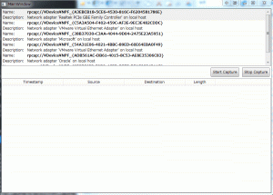

前回は下準備でした。
Introduction
まずは、Pcap.Netを入手します。 Nugetにパッケージはありますが、公式では無い様子。 githubに公式ページがありますが、そこでNugetについて言及が無いので、野良配布でしょう。 なので、githubのリリースページから最新版を入手します。

注意して欲しいのは、解凍後の中身にx86版とx64版が存在することです。 正確には、
- PcapDotNet.Core.dll
- PcapDotNet.Core.Extensions.dll
の2つが、x86またはx64でビルドされており、残りはAnyでビルドされています。 つまり、配布時には、これらを切り替えて実行フォルダに配置しないと System.BadImageFormatException で落ちます。 そのため、ソリューションの構成にAnyは含みませんが、参照dllはやむなくx64のPcap.Netを参照しています。 実行時にdllを適切に配置すれば良いのですが、若干気持ち悪いかな… ソースは下記になります

Source
いつも通り、簡単にMVVMを使用して簡単なプロジェクトを作成します。 ネットワークアダプタを選択するリストボックス、選択したリストボックスに流れるHTTPトラフィックを表示するグリッドマップ、キャプチャの開始ボタンを備えています。 Xaml側は省略します。 Pcap.Netのライブラリは、sln ファイルと同じ階層にあるlibフォルダに、下記のように配置してください。
- \lib\PcapDotNet\PcapDotNet.Binaries.1.0.4.x64\PcapDotNet.Base.dll
- \lib\PcapDotNet\PcapDotNet.Binaries.1.0.4.x64\PcapDotNet.Base.pdb
- \lib\PcapDotNet\PcapDotNet.Binaries.1.0.4.x64\PcapDotNet.Base.xml
- \lib\PcapDotNet\PcapDotNet.Binaries.1.0.4.x64\PcapDotNet.Core.dll
- \lib\PcapDotNet\PcapDotNet.Binaries.1.0.4.x64\PcapDotNet.Core.Extensions.dll
- \lib\PcapDotNet\PcapDotNet.Binaries.1.0.4.x64\PcapDotNet.Core.Extensions.pdb
- \lib\PcapDotNet\PcapDotNet.Binaries.1.0.4.x64\PcapDotNet.Core.Extensions.XML
- \lib\PcapDotNet\PcapDotNet.Binaries.1.0.4.x64\PcapDotNet.Core.pdb
- \lib\PcapDotNet\PcapDotNet.Binaries.1.0.4.x64\PcapDotNet.Core.xml
- \lib\PcapDotNet\PcapDotNet.Binaries.1.0.4.x64\PcapDotNet.Packets.dll
- \lib\PcapDotNet\PcapDotNet.Binaries.1.0.4.x64\PcapDotNet.Packets.pdb
- \lib\PcapDotNet\PcapDotNet.Binaries.1.0.4.x64\PcapDotNet.Packets.xml
IPacketCaptureService
まず、DI(依存性注入)のため、パケットキャプチャを担当するinterfaceを定義します。 Pcap.Netとの依存性を極力減らすために、入出力の型もinterfaceに限定しています。 つまり、interface実装側で具象クラスを生成しますが、サービスの利用側は実際の型を意識しなくて済むので、依存性を断ち切れます。 [code lang=”csharp”] using System.Collections.Generic; using WPF.PcapNet.Models.Interfaces;
namespace WPF.PcapNet.Services.Interfaces {
public interface IPacketCaptureService {
IEnumerable
}
} [/code]
IPacketCaptureDeviceModel
IPacketCaptureService.GetAllDevices の戻りの要素である、ネットワークキャプチャデバイスを表現します。 このinterfaceからパケットのキャプチャの開始、停止を指示します。 [code lang=”csharp”] using System;
namespace WPF.PcapNet.Models.Interfaces {
public interface IPacketCaptureDeviceModel {
#region Events
event EventHandler
#endregion
#region Properties
string Description { get; }
string Name { get; }
#endregion
#region Methods
void StartCapture();
void StopCapture();
#endregion
}
} [/code]
IPacketModel
パケットデータを表現します。 今回は、送信元アドレス、送信先アドレス、パケット長、送受信日時のみ用意します。 [code lang=”csharp”] using System;
namespace WPF.PcapNet.Models.Interfaces {
public interface IPacketModel {
#region Properties
string Destination { get; }
int Length { get; }
DateTime Timestamp { get; }
string Source { get; }
#endregion
}
} [/code]
PacketCaptureService
今回の肝です。 型をネストしているのは、型の情報を外部が知る必要は無いですし、無関係のクラスが型を使用しないようにすることを意識させやすくするためです。 まぁprivateだからアクセスできませんが。 必要な情報は、interfaceを経由し、Pcap.Netの具体的なデータにアクセスします。 [code lang=”csharp”] using System; using System.Collections.Generic; using System.Linq; using System.Threading.Tasks; using PcapDotNet.Core; using PcapDotNet.Packets; using WPF.PcapNet.Models.Interfaces; using WPF.PcapNet.Services.Interfaces;
namespace WPF.PcapNet.Services {
public sealed class PacketCaptureService : IPacketCaptureService {
#region Methods
public IEnumerable
#endregion
private sealed class PacketCaptureDeviceModel : IPacketCaptureDeviceModel {
#region Events
public event EventHandler
#endregion
#region Fields
private readonly LivePacketDevice _Device;
private BerkeleyPacketFilter _Filter;
private PacketCommunicator _PacketCommunicator;
private Task _Task;
#endregion
#region Constructors
public PacketCaptureDeviceModel(LivePacketDevice device) { this._Device = device; }
#endregion
#region Properties
public string Description => this._Device.Description;
public string Name => this._Device.Name;
#endregion
#region Methods
public void StartCapture() { // portion of the packet to capture // 65536 guarantees that the whole packet will be captured on all the link layers var snapshotLength = 65536;
// promiscuous mode var packetDeviceOpenAttributes = PacketDeviceOpenAttributes.Promiscuous;
// read timeout var timeout = 1000;
this._PacketCommunicator?.Break(); this._PacketCommunicator?.Dispose(); this._PacketCommunicator = this._Device.Open(snapshotLength, packetDeviceOpenAttributes, timeout);
this._Filter?.Dispose();
this._Filter = this._PacketCommunicator.CreateFilter(“ip and tcp and port http”); this._PacketCommunicator.SetFilter(this._Filter);
this._Task?.Dispose(); this._Task = Task.Run(() => { try { // 停止時に例外を投げるが、原因不明 this._PacketCommunicator.ReceivePackets(0, this.OnPacketReceived); } catch (Exception e) { Console.WriteLine(e); } }); }
public void StopCapture() { this._PacketCommunicator?.Break(); this._PacketCommunicator?.Dispose(); this._Filter?.Dispose();
this._PacketCommunicator = null; this._Filter = null; }
#region Helper Methods
private void OnPacketReceived(Packet packet) { this.PacketReceived?.Invoke(this, new PacketModel(packet)); }
#endregion
#endregion }
private sealed class PacketModel : IPacketModel {
#region Fields
private readonly Packet _Packet;
#endregion
#region Constructors
public PacketModel(Packet packet) { this._Packet = packet; }
#endregion
#region Properties
public string Destination => this._Packet.IpV4.Destination.ToString();
public int Length => this._Packet.Length;
public DateTime Timestamp => this._Packet.Timestamp;
public string Source => this._Packet.IpV4.Source.ToString();
#endregion
}
}
} [/code] StartCapture が重要です。 LivePacketDevice.Openでパケットのキャプチャを開始するオブジェクトを取得します。 その後、フィルターを設定し、IPかつTCPかつHTTP以外を弾きます。 最後に、PacketCommunicator.ReceivePackets で、コールバック関数を指定してキャプチャを開始します。 注意してほしいのは、このメソッドはスレッドをブロックします。 よって、Taskによる非同期実行しています。 本当は、StartCaptureをasyncすれば良かったのですが、これで動くので良いです。 停止は、PacketCommunicator.Break を呼びます。 ただし、Task内で、InvalidOpeationExceptionを投げる原因がわかりませんので、try-catchで囲っています。 キャプチャ中に停止しているのが不味いのだと思いますが…
テスト
実際に実行してみます。 お好きなキャプチャデバイスを選択してStart Captureを押下することでキャプチャが実行されます。 HTTPのみ許容しているので、Webブラウザでどこかにアクセスしてみてください。

ちょっとマウスカーソルが途中でどこか行ったのは、Webブラウザを操作しに行ったからです。
{kind=link}
Conclusion
簡単にキャプチャできました。 フィルタ条件が若干覚えないといけないですが、このあたりを自分が理解できやすいUIにすることで、グッと使いやすくなると思います。
Source Code
https://github.com/takuya-takeuchi/Demo/tree/master/WPF.Pcap.Net1